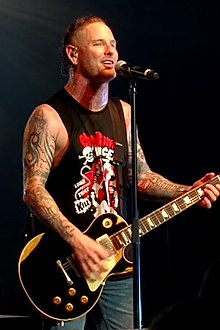
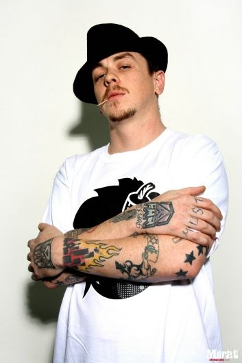
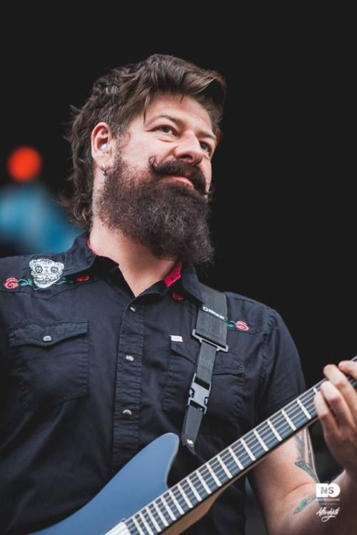
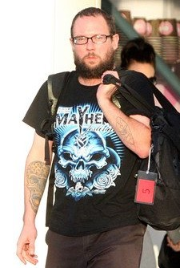
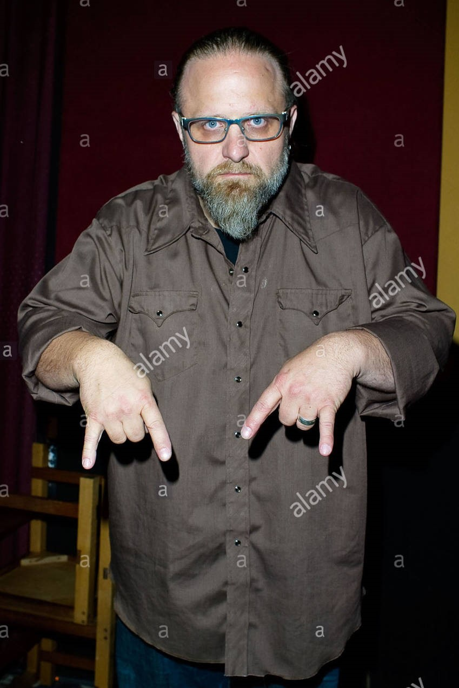
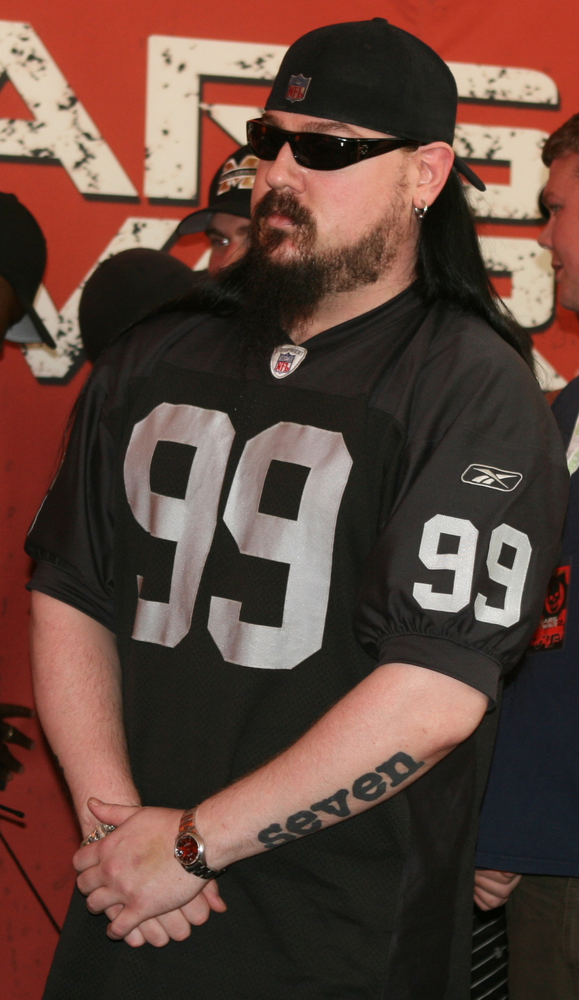
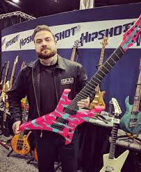
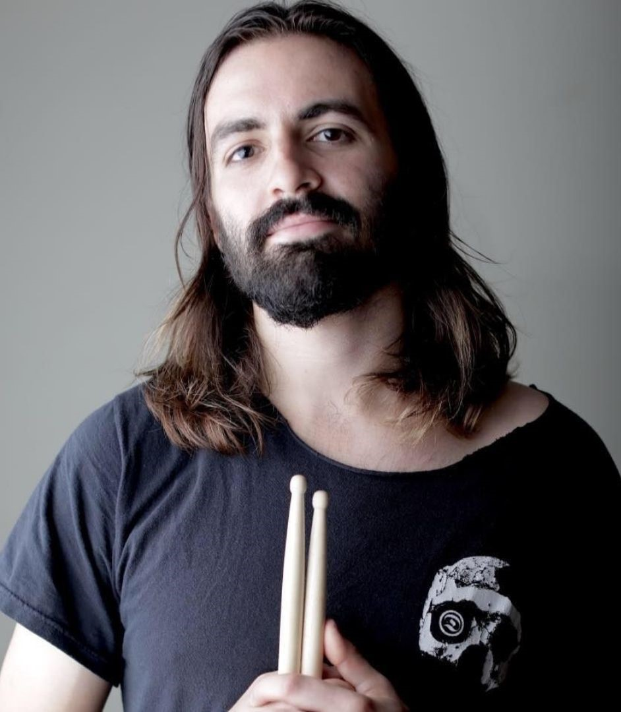

Corey Todd Taylor nació el 8 de diciembre 1973, es un músico estadounidense, más conocido como el vocalista y compositor de las bandas Slipknot y Stone Sour. Taylor fue criado por su madre soltera y, gracias a su abuela desarrolló un profundo aprecio por el rock clásico. Taylor conoció por primera vez a su padre el 28 de marzo de 2005 y ha forjado una fuerte relación con este. En la actualidad, tiene una esposa, una exesposa y dos hijos. Para cuando lanzó el disco Come What (ever) May, de Stone Sour, se encontraba sobrio. El 3 de agosto de 2009 y el 29 de julio de 2010 fue coanfitrión de los Premios Kerrang! junto a Scott Ian de Anthrax y The Damned Things. De igual forma, ha declarado en numerosas entrevistas que le encantan las guitarras Gibson,6 y ha grabado vídeos en nombre de la Asociación de Gibson. Cuando toca en solitario o con Stone Sour, utiliza con frecuencia las guitarras de esta marca. Corey Taylor es miembro fundador de Stone Sour y ha lanzado seis álbumes de estudio con la banda. Taylor se unió a Slipknot en 1997 para reemplazar a su vocalista original Anders Colsefni. Ha publicado 6 álbumes de estudio con la banda. Taylor se alterna constantemente entre ambas bandas, como se vio en el año 2001, después del lanzamiento de Iowa, donde se reunió con Stone Sour inmediatamente después de terminar la gira con Slipknot. Ha trabajado con varias bandas, incluyendo, Apocalyptica, Anthrax, Junk Beer Kidnap Band, Velvet Revolver, Soulfly y Avenged Sevenfold. Taylor compone y canta diversos estilos, variando según el género. El exbaterista de Slipknot Joey Jordison, lo califica como "un muy buen cantante melódico". Taylor fue posicionado en el lugar 86 de la lista "Top 100 de vocalistas de metal de todos los tiempos" de Hit Parader.
Sidney George Wilson nació el 20 de enero de 1977, también conocido como Monkeyboy y #0, es un músico estadounidense conocido como el DJ de la banda de Nu metal, ganadora del Premio Grammy, Slipknot. Su familia proviene de Inglaterra. Sus influencias musicales son los Beastie Boys. Antes de Slipknot, él formó un grupo de DJ's llamado The Sound Proof Coalition, en donde toca junto a "Rob Gee" de (N20) Records. En el año 1998, se integró a Slipknot, poco después de que la banda firmó con el productor Ross Robinson. Durante los conciertos con Slipknot es muy activo y muchas veces salta desde el escenario hasta el público quienes se desesperan por llevarlo. Además siempre es visto peleando en el escenario, con Shawn Crahan, además de prenderse fuego el mismo. En el DVD Voliminal: Inside the Nine, dijo que en el futuro, dejaría de hacer tantas acrobacias, por temor a ser detenido o acusado de intento de suicidio, por prenderse fuego. Él dijo: "cuando salto fuera del escenario, veo que todo se me viene encima". También tiene una carrera como DJ, donde toca música de Drum and bass, en donde es conocido como DJ Starscream, "Starscream" era el nombre de uno de los personajes de la serie Transformers (Tiene tatuados el símbolo de cada bando de los Transformers en ambas manos). Lanza sus discos bajo el sello japonés/estadounidense llamado (N20) Records. Durante el 2006, colaboró con el vocalista de The Mad Capsule Markets, Kyono en la canción 'HAKAI(Deathtroy)' para la banda sonora de la película Death Note, durante el 2007, un remix de la canción apareció en el mini álbum de la banda Wagdug Futuristic Unity, titulado Nu Riot. Actualmente, está trabajando en la grabación de un disco con su nueva banda de nu metal y doom metal llamada A.M.P.T.1Recientemente, trabaja en su propio sello discográfico, llamado Tuff Bong Records.
James Donald Root nació en Las Vegas, Nevada, Estados Unidos; el 2 de octubre de 1971. Es conocido por ser el guitarrista líder / rítmico de la banda de Metal Slipknot y exguitarrista de la banda Stone Sour. Las revistas Guitar World, Kerrang, Revolver y Rolling Stone le otorgaron en el 2008 el título de "Guitarrista del año" por el buen trabajo realizado en el álbum "All Hope Is Gone" de Slipknot, destacándose los riffs y solos de canciones como Psychosocial, Dead Memories, Welcome, Gehenna y This Cold Black. Fue ganador del Grammy con Slipknot en la categoría de Best Metal Performance por la canción Before I Forget en el año 2006 y ha tenido 6 nominaciones más con Slipknot y otras 3 más con Stone Sour en esta misma categoría. También ha tocado como músico de sesión para artistas como (Sid Wilson, DJ de Slipknot) y Jonathan Davis (vocalista de Korn) Nació el 2 de octubre de 1971 en Las Vegas, Nevada, comenzó en el mundo de la música gracias a sus padres, su padre era un granjero y guitarrista integrante de una banda imitadora de The Beatles y The Rolling Stones y su madre era pianista de un teatro. Creció escuchando esta música; compartía con su hermano fran rock una gran afición por el disco Master of Reality de Black Sabbath (que curiosamente salió a la venta 3 días después de su nacimiento), por este hecho comenzó su afición por el metal al mismo tiempo que con 10 años empezó a tocar la guitarra a través de su padre y el piano por su madre, y se integró a una banda de jazz donde conoció a Miguel Adalberto. Durante su juventud tocó en bandas como Deadfront, Anal Blast (donde también estaban Paul Gray y Joey Jordison) y Atomic Opera. También trabajó como impresor y repartidor.
Craig Michael Jones nació en Des Moines el 11 de febrero de 1972. Es un músico estadounidense, conocido por ser el teclista de la banda de metal Slipknot. Jones utiliza regularmente el sampler. Antes de Slipknot, tocó en la banda Modifidious junto a Joey Jordison. Después se integró a Slipknot como guitarrista. Jones toca la guitarra en la era "Mate.Feed.Kill.Repeat", pero después se pasó al sampler. Los demás miembros de Slipknot han sido vistos sin máscaras, cuando no están en concierto, pero Craig casi nunca ha sido visto sin máscara, en las entrevistas se tapa los ojos para guardar el anonimato, por esta razón es siempre el primero en irse del escenario al final de los conciertos. Su cara solo ha podido ser vista dos veces: una en el lanzamiento del vídeo 'Duality' en Des Moines, Iowa y otra en la conferencia de prensa de la muerte del bajista de la banda Paul Gray. Él es un fanático de los videojuegos y de las películas de terror, incluso ha sacado varias ideas de algunas películas, por ejemplo: la frase "Here comes the pain" (Aquí viene el dolor) en la canción (Sic) fue tomada de la película Carlito's Way de la voz de Al Pacino. La canción "742617000027" fue creada por él usando el diálogo, el cual se repite durante toda la canción, "The whole thing I think, is sick" (todo lo que pienso, es enfermo, también podría ser "es asqueroso" "es repugnante") el cual fue tomada de un documental de Charles Manson. Durante las entrevistas, cierra la cremallera de su máscara para no contestar ninguna pregunta. Al parecer, es una persona aislada e independiente. James Root dijo: "Él me asusta. Es casi un servicio comunitario saber lo que hace en el día a día". Una vez un periodista le pidió a Craig que se describiera y dijo: "Soy delgado, como un asesino en serie".
Michael Shawn Crahan nació en Des Moines, Iowa, 24 de septiembre de 1969. Es uno de los percusionistas y el corista de la banda Slipknot y fundador de la misma, ganador de un Grammy con su banda. Además es el miembro más longevo de la banda. Es soldador, por lo tanto suelda él mismo la mayoría de sus instrumentos. En 1993 tocó la batería en la banda Heads On The Wall. También tocaba en la banda de Joey Jordison, Modifidious. En 1995 creó la banda Slipknot, junto con Paul Gray, Anders Colsefni y Doniee Steele. Fue el primero en usar máscaras usando una de payaso de circo. Sus padres corrieron con la mayoría de los gastos del lanzamiento del disco Slipknot. Durante el hiato de Slipknot, en 2003, creó la banda To My Surprise, en la que continúa actualmente. Durante los conciertos es uno de los más activos y se ha fracturado varias partes del cuerpo. También es padre de familia, tiene 4 hijos. Es denominado por la banda y los fanes como "Clown" o "#6". Fue el productor asistente del disco L.D. 50 de la banda Mudvayne. También fue el productor del disco Invitation to the Dance de la banda 40 Below Summer. él hizo una pequeña ayuda en el vídeo Just So You Know de la banda American Head Charge, y remezclo una canción del mismo sencillo. También hizo una colaboración con la banda estadounidense Escape The Fate en su reedición This War Is Ours Deluxe Edition con un remix de la canción This War Is Ours (del disco This War Is Ours), titulado This War Is Mine. También hizo de productor para el remix de la canción de la banda británica Bring Me The Horizon, «Sleep With One Eye Open» de su relanzado álbum de remezclas Suicide Season Cut Up.
Michael "Mick" Gordon Thomson nacido el 3 de noviembre de 1973 en Des Moines, Iowa. Es un músico estadounidense de heavy metal mejor conocido como el guitarrista rítmico / líder de la banda estadounidense Slipknot, en la que es llamado # 7. Thomson originalmente se reunió con los miembros fundadores de Slipknot, Anders Colsefni, Donnie Steele y Paul Gray a través de su participación mutua en la banda de death metal Body Pit, y luego reemplazó a Craig Jones en el grupo en 1996. Tras la partida de Joey Jordison en 2013, Thomson es ahora el tercero miembro de mayor duración en Slipknot. Comenzó a tocar la guitarra a los 16 años de edad. Antes de tocar en la banda, Mick era profesor de guitarra en una escuela local de Des Moines, Iowa, dio varias clases de guitarra junto a otros virtuosos como Oz Fox (Stryper). Antes de participar en Slipknot, Thomson estuvo en la banda Bodypit con antiguos miembros de la banda Slipknot Anders Colsefni, Donnie Steele y el difunto bajista Paul Gray. Como la segunda guitarra en Slipknot, conocen a Mick por tener el tatuaje con la palabra Seven (siete) a su brazo izquierdo, que fue hecho por Matt Kiley, y en el mástil de su guitarra. Thomson tiene una fascinación por los asesinos en serie. Sobre el tema Thomson ha dicho, Si yo fuera un asesino famoso, me gustaría tener algunos de los puntos más finos de un buen número de ellos Albert Fish y Ed Gein primavera a la mente. Pero yo no soy una persona violenta por naturaleza. No me jodas, y todo irá bien.
Alessandro Venturella es un músico de Metal británico, que actualmente es bajista de la banda Slipknot. Venturella se ha desempeñado como guitarrista de la banda de metal británico Krokodil y también en Cry For Silence. Él fue el técnico de guitarras de gira para Architects, Brent Hinds de la banda de metal progresivo Mastodon, y también para Coheed & Cambria, y Fig. Venturella se unió a Slipknot junto a Jay Weinberg durante el proceso de grabación del álbum .5: The Gray Chapter, reemplazando al fallecido bajista Paul Gray, quien había participado durante un tiempo en el estudio para la grabación del disco. La intención de los miembros de la banda fue que las identidades de los nuevos miembros no fuesen descubiertas, pero por medio de comparaciones de los aspectos del baterista y el bajista que aparecen en el video de "The Devil In I" con fotografías de los sospechosos de ser quienes aparecen allí, Alessandro Venturella y Jay Weinberg, pudo determinarse que ellos efectivamente son los nuevos miembros de la banda. El 7 de octubre de 2014, el vocalista Corey Taylor de Slipknot expresó su frustración porque a Venturella se lo había identificado al tocar el bajo en el video para la canción "The Devil In I". El tatuaje en la mano izquierda de Venturella había sido reportado por MetalChapel Noticias, a pesar de todos los músicos estaban encapuchados en el vídeo. Taylor dijo de sobre Venturella y Weinberg: "Ellos aún no son miembros oficiales de la banda, pero no por eso son personas que sólo tocan en la banda. El tiempo dirá si son o no son miembros de pleno derecho. Hasta ahora lo están haciendo muy bien y estamos disfrutando de tocar con ellos." En octubre, 25 y 26, Venturella toca con la banda en vivo por primera vez, en el Knotfest 2014 .
Jay Weinberg, nacido el 8 de septiembre de 1990, es un músico y baterista estadounidense de la banda de heavy metal Slipknot . Es hijo del baterista estadounidense Max Weinberg. Tocó con la American punk rock banda de la deleitándose y una gira en 2009 como batería con Bruce Springsteen's E Street Band , en sustitución de su padre. Durante 2010, fue brevemente el baterista de Madball . Durante 2011 y 2012, Weinberg tocó con Against Me!. En 2014, Weinberg reemplazó a Joey Jordison como baterista de Slipknot. Es el miembro más joven de la banda. En 2014, Weinberg se convirtió en el baterista de Slipknot tras la marcha de Joey Jordison a finales de 2013. Aunque la identidad del baterista no había sido revelada oficialmente por la propia banda, prefirieron mantener la identidad de los nuevos miembros (un nuevo bajista, confirmado Alessandro Venturella, también se había unido a la banda) en secreto, ya que no eran miembros oficiales en este momento, un extécnico de batería de la banda filtró su itinerario, revelando que el baterista era Weinberg. Venturella también fue nombrado en el itinerario, aunque los fanáticos lo habían identificado anteriormente a través de sus distintivos tatuajes en sus manos. Weinberg finalmente fue revelado oficialmente como el baterista por Jim Root en una entrevista con Ultimate-Guitar el 13 de mayo de 2015.
